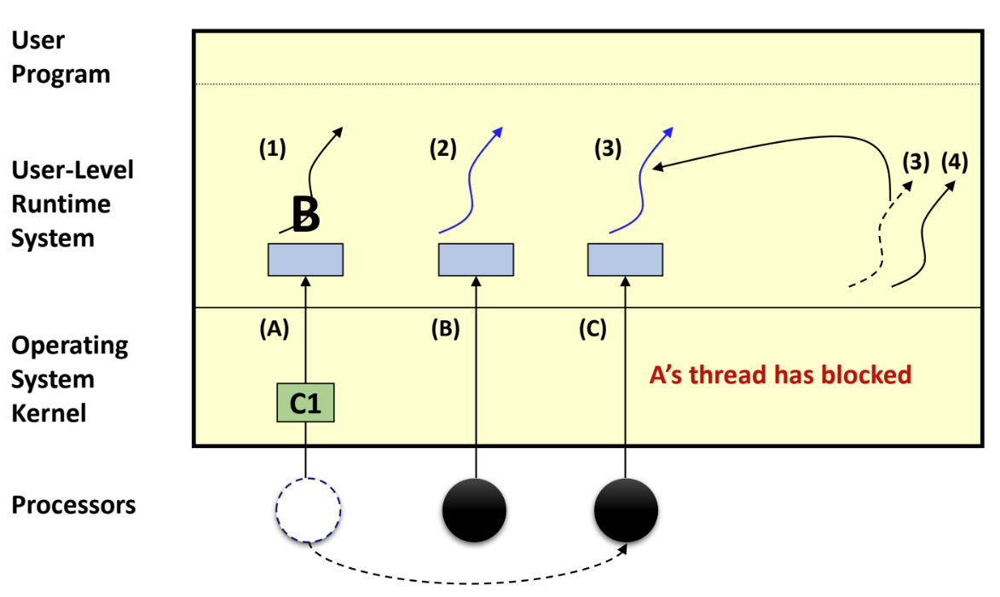
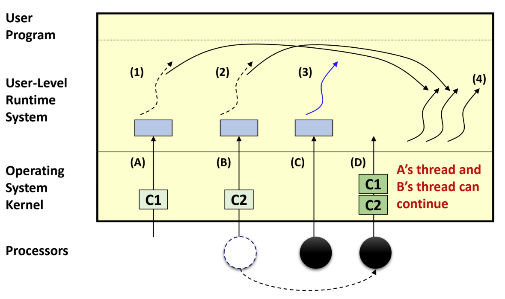
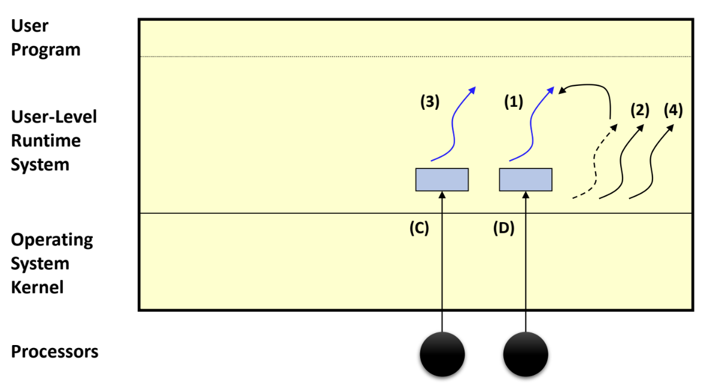
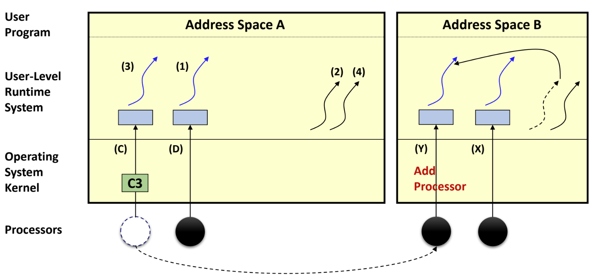

<!DOCTYPE html>
<html><head><title>17. Scheduler Activation (서울대 고급 운영체제 강의록)</title><meta charSet="utf-8"/><meta name="viewport" content="width=device-width, initial-scale=1.0"/><meta property="og:title" content="17. Scheduler Activation (서울대 고급 운영체제 강의록)"/><meta property="og:description" content="서울대학교 컴퓨터공학과 김진수 교수님의 &amp;quot;고급 운영체제&amp;quot; 강의를 필기한 내용입니다. 다소 잘못된 내용과 구어적 표현 이 포함되어 있을 수 있습니다. Kernel, User level thread § 뭐 kernel thread 야 kernel code 가 실행되게 thread 생성해 주면 되니까 상관없는데 User program 을 thread 로 실행시키는게 문제다."/><meta property="og:image" content="https://mdg.haeramk.im/static/og-image.png"/><meta property="og:width" content="1200"/><meta property="og:height" content="675"/><link rel="icon" href="../../../../../static/icon.png"/><meta name="description" content="서울대학교 컴퓨터공학과 김진수 교수님의 &amp;quot;고급 운영체제&amp;quot; 강의를 필기한 내용입니다. 다소 잘못된 내용과 구어적 표현 이 포함되어 있을 수 있습니다. Kernel, User level thread § 뭐 kernel thread 야 kernel code 가 실행되게 thread 생성해 주면 되니까 상관없는데 User program 을 thread 로 실행시키는게 문제다."/><meta name="generator" content="Quartz"/><link rel="preconnect" href="https://fonts.googleapis.com"/><link rel="preconnect" href="https://fonts.gstatic.com"/><link href="../../../../../index.css" rel="stylesheet" type="text/css" spa-preserve/><link href="https://cdn.jsdelivr.net/npm/katex@0.16.0/dist/katex.min.css" rel="stylesheet" type="text/css" spa-preserve/><link href="https://fonts.googleapis.com/css2?family=IBM Plex Mono&amp;family=Gowun Batang:wght@400;700&amp;family=Gowun Dodum:ital,wght@0,400;0,600;1,400;1,600&amp;display=swap" rel="stylesheet" type="text/css" spa-preserve/><script src="../../../../../prescript.js" type="application/javascript" spa-preserve></script><script type="application/javascript" spa-preserve>const fetchData = fetch(`../../../../../static/contentIndex.json`).then(data => data.json())</script></head><body data-slug="gardens/os/originals/aos.spring.2024.cse.snu.ac.kr/lectures/17.-Scheduler-Activation"><div id="quartz-root" class="page"><div id="quartz-body"><div class="left sidebar"><h1 class="page-title "><a href="../../../../..">Madison Digital Garden</a></h1><div class="spacer mobile-only"></div><div class="search "><div id="search-icon"><p>Search</p><div></div><svg tabIndex="0" aria-labelledby="title desc" role="img" xmlns="http://www.w3.org/2000/svg" viewBox="0 0 19.9 19.7"><title id="title">Search</title><desc id="desc">Search</desc><g class="search-path" fill="none"><path stroke-linecap="square" d="M18.5 18.3l-5.4-5.4"></path><circle cx="8" cy="8" r="7"></circle></g></svg></div><div id="search-container"><div id="search-space"><input autocomplete="off" id="search-bar" name="search" type="text" aria-label="Search for something" placeholder="Search for something"/><div id="results-container"></div></div></div></div><div class="darkmode "><input class="toggle" id="darkmode-toggle" type="checkbox" tabIndex="-1"/><label id="toggle-label-light" for="darkmode-toggle" tabIndex="-1"><svg xmlns="http://www.w3.org/2000/svg" xmlnsXlink="http://www.w3.org/1999/xlink" version="1.1" id="dayIcon" x="0px" y="0px" viewBox="0 0 35 35" style="enable-background:new 0 0 35 35;" xmlSpace="preserve"><title>Light mode</title><path d="M6,17.5C6,16.672,5.328,16,4.5,16h-3C0.672,16,0,16.672,0,17.5    S0.672,19,1.5,19h3C5.328,19,6,18.328,6,17.5z M7.5,26c-0.414,0-0.789,0.168-1.061,0.439l-2,2C4.168,28.711,4,29.086,4,29.5    C4,30.328,4.671,31,5.5,31c0.414,0,0.789-0.168,1.06-0.44l2-2C8.832,28.289,9,27.914,9,27.5C9,26.672,8.329,26,7.5,26z M17.5,6    C18.329,6,19,5.328,19,4.5v-3C19,0.672,18.329,0,17.5,0S16,0.672,16,1.5v3C16,5.328,16.671,6,17.5,6z M27.5,9    c0.414,0,0.789-0.168,1.06-0.439l2-2C30.832,6.289,31,5.914,31,5.5C31,4.672,30.329,4,29.5,4c-0.414,0-0.789,0.168-1.061,0.44    l-2,2C26.168,6.711,26,7.086,26,7.5C26,8.328,26.671,9,27.5,9z M6.439,8.561C6.711,8.832,7.086,9,7.5,9C8.328,9,9,8.328,9,7.5    c0-0.414-0.168-0.789-0.439-1.061l-2-2C6.289,4.168,5.914,4,5.5,4C4.672,4,4,4.672,4,5.5c0,0.414,0.168,0.789,0.439,1.06    L6.439,8.561z M33.5,16h-3c-0.828,0-1.5,0.672-1.5,1.5s0.672,1.5,1.5,1.5h3c0.828,0,1.5-0.672,1.5-1.5S34.328,16,33.5,16z     M28.561,26.439C28.289,26.168,27.914,26,27.5,26c-0.828,0-1.5,0.672-1.5,1.5c0,0.414,0.168,0.789,0.439,1.06l2,2    C28.711,30.832,29.086,31,29.5,31c0.828,0,1.5-0.672,1.5-1.5c0-0.414-0.168-0.789-0.439-1.061L28.561,26.439z M17.5,29    c-0.829,0-1.5,0.672-1.5,1.5v3c0,0.828,0.671,1.5,1.5,1.5s1.5-0.672,1.5-1.5v-3C19,29.672,18.329,29,17.5,29z M17.5,7    C11.71,7,7,11.71,7,17.5S11.71,28,17.5,28S28,23.29,28,17.5S23.29,7,17.5,7z M17.5,25c-4.136,0-7.5-3.364-7.5-7.5    c0-4.136,3.364-7.5,7.5-7.5c4.136,0,7.5,3.364,7.5,7.5C25,21.636,21.636,25,17.5,25z"></path></svg></label><label id="toggle-label-dark" for="darkmode-toggle" tabIndex="-1"><svg xmlns="http://www.w3.org/2000/svg" xmlnsXlink="http://www.w3.org/1999/xlink" version="1.1" id="nightIcon" x="0px" y="0px" viewBox="0 0 100 100" style="enable-background='new 0 0 100 100'" xmlSpace="preserve"><title>Dark mode</title><path d="M96.76,66.458c-0.853-0.852-2.15-1.064-3.23-0.534c-6.063,2.991-12.858,4.571-19.655,4.571  C62.022,70.495,50.88,65.88,42.5,57.5C29.043,44.043,25.658,23.536,34.076,6.47c0.532-1.08,0.318-2.379-0.534-3.23  c-0.851-0.852-2.15-1.064-3.23-0.534c-4.918,2.427-9.375,5.619-13.246,9.491c-9.447,9.447-14.65,22.008-14.65,35.369  c0,13.36,5.203,25.921,14.65,35.368s22.008,14.65,35.368,14.65c13.361,0,25.921-5.203,35.369-14.65  c3.872-3.871,7.064-8.328,9.491-13.246C97.826,68.608,97.611,67.309,96.76,66.458z"></path></svg></label></div></div><div class="center"><div class="page-header"><div class="popover-hint"><h1 class="article-title ">17. Scheduler Activation (서울대 고급 운영체제 강의록)</h1><p class="content-meta ">May 09, 2024, 15 min read</p><ul class="tags "><li><a href="../../../../../tags/originals" class="internal tag-link">#originals</a></li><li><a href="../../../../../tags/snu-aos24s" class="internal tag-link">#snu-aos24s</a></li><li><a href="../../../../../tags/os" class="internal tag-link">#os</a></li><li><a href="../../../../../tags/draft" class="internal tag-link">#draft</a></li></ul></div></div><article class="popover-hint"><blockquote class="callout" data-callout="info">
<div class="callout-title">
                  <div class="callout-icon"><svg xmlns="http://www.w3.org/2000/svg" width="100%" height="100%" viewBox="0 0 24 24" fill="none" stroke="currentColor" stroke-width="2" stroke-linecap="round" stroke-linejoin="round"><circle cx="12" cy="12" r="10"></circle><line x1="12" y1="16" x2="12" y2="12"></line><line x1="12" y1="8" x2="12.01" y2="8"></line></svg></div>
                  <div class="callout-title-inner"><p>서울대학교 컴퓨터공학과 김진수 교수님의 &quot;고급 운영체제&quot; 강의를 필기한 내용입니다. </p></div>
                  
                </div>
</blockquote>
<blockquote class="callout" data-callout="warning">
<div class="callout-title">
                  <div class="callout-icon"><svg xmlns="http://www.w3.org/2000/svg" width="100%" height="100%" viewBox="0 0 24 24" fill="none" stroke="currentColor" stroke-width="2" stroke-linecap="round" stroke-linejoin="round"><path d="m21.73 18-8-14a2 2 0 0 0-3.48 0l-8 14A2 2 0 0 0 4 21h16a2 2 0 0 0 1.73-3Z"></path><line x1="12" y1="9" x2="12" y2="13"></line><line x1="12" y1="17" x2="12.01" y2="17"></line></svg></div>
                  <div class="callout-title-inner"><p>다소 잘못된 내용과 구어적 표현 이 포함되어 있을 수 있습니다. </p></div>
                  
                </div>
</blockquote>
<h2 id="kernel-user-level-thread">Kernel, User level thread<a aria-hidden="true" tabindex="-1" href="#kernel-user-level-thread" class="internal"> §</a></h2>
<ul>
<li>뭐 kernel thread 야 kernel code 가 실행되게 thread 생성해 주면 되니까 상관없는데</li>
<li>User program 을 thread 로 실행시키는게 문제다.</li>
<li>이 user program 을 “누가” 실행시키냐에 따라 Kernel level thread, User level thread 로 나뉘는 것.</li>
</ul>
<h3 id="kernel-level-thread-11-model">Kernel-level thread (1:1 Model)<a aria-hidden="true" tabindex="-1" href="#kernel-level-thread-11-model" class="internal"> §</a></h3>
<p></p>
<ul>
<li>Kernel level thread 는 user program 을 kernel thread 에서 실행시키는 것이다.</li>
<li>좀 더 자세히 말하면
<ul>
<li>일단 user program 에서 thread 를 생성하기 위해 syscall 을 하면 kernel 로 점프하게 된다.</li>
<li>그리고 여기서 kernel thread 를 만든 뒤, 여기에서 user program 으로 다시 뛰어서 user program 이 실행되는 thread 가 생성되는 것이다.</li>
</ul>
</li>
<li>이렇게 user program 을 실행시키는 kernel thread 가 하나 생성되기에 user thread 와 kernel thread 가 1:1 로 매핑된다, 즉 <em>1:1 model</em> 이라고도 불리는 것.</li>
<li>장점은
<ul>
<li>User thread 가 kernel thread 로 구현되는 것이니 당연히 kernel 도 이 thread 의 존재를 알고, 따라서 그에 맞게 scheduling 해줄 수 있다.
<ul>
<li>뒤에 User level thread 의 단점으로도 나오는 건데, kernel level thread 에서는 한 thread 의 block 이 다른 thread 에 영향을 주지 않는다.</li>
</ul>
</li>
</ul>
</li>
<li>하지만 단점은 아무래도 무겁다는 것이다..
<ul>
<li>일단 어떤 실행 흐름이 변경되는 방법들에 대해 좀 비교해 보자.</li>
<li>가장 가벼운 것은 function call 이다.
<ul>
<li>그냥 Stack 에 넣어 SP 변경하고 PC 바꿔서 점프뛰면 되기 때문.</li>
<li>하지만 이 function call 은 parallel 하게 작동하지 않는다. 이때문에 thread 를 사용하는 것</li>
</ul>
</li>
<li>다음으로는 thread 가 있다.
<ul>
<li>Thread 에서는 function call 과 다르게 별도의 stack 이 할당되고, register 들을 save 하고 점프뛰게 된다.</li>
</ul>
</li>
<li>근데 kernel level thread 에서는 그냥 점프뛸 수가 없다.
<ul>
<li>대응되는 kernel thread 가 있기 때문에 kernel 로 진입하는 overhead 가 있고, 이때문에 느려지게 된다.</li>
</ul>
</li>
</ul>
</li>
<li>추가적인 단점으로는 thread API 가 다소 OS-specific 할 수 있다는 것이다.
<ul>
<li>즉, portability 와 flexibility 가 떨어짐</li>
</ul>
</li>
</ul>
<h3 id="user-level-thread-n1-model">User-level thread (N:1 Model)<a aria-hidden="true" tabindex="-1" href="#user-level-thread-n1-model" class="internal"> §</a></h3>
<p></p>
<ul>
<li>User level thread 는 user program 을 kernel 도움 없이 또 다른 user program 인 thread library (runtime library) 가 돌려주는 것이다.
<ul>
<li>이 thread library 에서 kernel 개입 없이 procedure call (아마 function calll?) 로 각 thread 를 실행시켜준다.</li>
<li>그래서 이놈이 kernel 대신 thread 들 간의 scheduling 등과 같은 작업을 해준다.
<ul>
<li>그래서 시간순서대로 보면 T1 -> lib -> T2 -> lib -> T3 이런 방식으로 와리가리하는 셈</li>
</ul>
</li>
<li>이건 결국에는 thread 간에 interleaving 을 할 때 stack, reg save 등과 같은 작업을 user level 에서도 가능하기 때문</li>
<li>그래서 이 library 에서 yield() API 를 제공해 줘서 (당연히 syscall 은 아니다) 실행 흐름을 다른 thread 로 넘길 수 있다</li>
</ul>
</li>
<li>따라서 여기에는 kernel thread 가 process 전체를 위해 하나만 생성되기에 <em>N:1 Model</em> 이라고도 한다.
<ul>
<li>이 user thread 들이 하나의 kernel thread 에서 도는 것이기 때문에 scheduler activation 논문에서는 kernel thread 를 virtual processor 라고 표현한다.</li>
<li>논문 읽을 때는 process = kernel thread = virtual processor 라고 치환하면서 이해하면 좋을 것이다.</li>
</ul>
</li>
<li>즉, 하나의 kernel thread 에서 파생된 흐름이 user level 로 올라온 다음에 여기에서 중간중간 runtime lib 의 도움을 받으며 여러 실행흐름으로 돌아다니는 것</li>
<li>장점은
<ul>
<li>thread 가 변경되는 것에 kernel 이 개입하지 않기 때문에 가볍다.</li>
<li>그리고, OS 종류에 의존적이지도 않다.</li>
</ul>
</li>
<li>단점은
<ul>
<li>Multi-core 를 활용할 수는 없다</li>
<li>Kernel level scheduling 이 안된다.
<ul>
<li>즉, 한 thread 에 IO block 이 걸리면 kernel 입장에서는 kernel thread 하나가 block 된 것이므로 모든 user thread 들이 block 된다.</li>
</ul>
</li>
<li>위 두가지는 결국에 이 user thread 들이 하나의 process, 하나의 kernel thread 를 근간으로 하기 때문</li>
</ul>
</li>
</ul>
<h3 id="mn-model">M:N Model<a aria-hidden="true" tabindex="-1" href="#mn-model" class="internal"> §</a></h3>
<ul>
<li>N:1 Model 에서 하나의 kernel thread 가 block 되었을 때 이것을 사용하는 모든 user thread 가 block 된다는 문제를 해결하기 위해</li>
<li>하나의 Process 에 여러 kernel thread 를 할당해서 thread library 에서 사용하게 하는 아이디어이다.</li>
<li>이렇게 하면 하나의 user thread 가 block 이 되었을 때, 해당 kernel thread 도 block 이 될 텐데 사용할 수 있는 kernel thread 가 몇개 더 있으므로 남은 kernel thread 를 나머지 user thread 에 붙여서 돌아가게 할 수 있다.</li>
<li>근데 이 방법은 문제가 있다..
<ul>
<li>Thread lib 에 user thread 들을 scheduling 하는 user level scheduler 가 있고</li>
<li>Kernel 에 kernel thread 들을 scheduling 하는 kernel level scheduler 가 있는데</li>
<li>이 둘간에 소통이 안되기 때문에 문제가 발생하게 된다..</li>
<li>대표적으로는 다음과 같은 문제가 발생할 수 있다.
<ul>
<li>User thread 가 놀고 있는데 여기에 kernel thread 를 할당해주거나</li>
<li>User thread 가 lock 을 잡고 작업을 하고 있는데 여기에서 kernel thread 를 뺏거나 등등</li>
</ul>
</li>
</ul>
</li>
</ul>
<h2 id="scheduler-activation">Scheduler activation<a aria-hidden="true" tabindex="-1" href="#scheduler-activation" class="internal"> §</a></h2>
<blockquote class="callout" data-callout="warning">
<div class="callout-title">
                  <div class="callout-icon"><svg xmlns="http://www.w3.org/2000/svg" width="100%" height="100%" viewBox="0 0 24 24" fill="none" stroke="currentColor" stroke-width="2" stroke-linecap="round" stroke-linejoin="round"><path d="m21.73 18-8-14a2 2 0 0 0-3.48 0l-8 14A2 2 0 0 0 4 21h16a2 2 0 0 0 1.73-3Z"></path><line x1="12" y1="9" x2="12" y2="13"></line><line x1="12" y1="17" x2="12.01" y2="17"></line></svg></div>
                  <div class="callout-title-inner"><p>#draft <a href="../../../../../gardens/os/thread/papers/draft/(논문)-Scheduler-activations---effective-kernel-support-for-the-user-level-management-of-parallelism" class="internal" data-slug="gardens/os/thread/papers/draft/(논문)-Scheduler-activations---effective-kernel-support-for-the-user-level-management-of-parallelism">Scheduler Activation 논문</a> 에서 더 자세하게 살펴보자.</p></div>
                  
                </div>
</blockquote>
<ul>
<li>위에서 소개한 thread 구현 방식들의 문제를 해결하고자 만든 새로운 threading design
<ul>
<li>SOSP‘92 에서 소개된 뒤 ToCS 저널에 올라갔다고 한다.</li>
</ul>
</li>
<li>Thread 가 block 되었을 때 다른 thread 들도 다 멈춰버리는 상황을 막되, user-level thread 의 가볍다는 장점은 살리자 라는 것이 목표</li>
</ul>
<h3 id="pain-point">Pain point<a aria-hidden="true" tabindex="-1" href="#pain-point" class="internal"> §</a></h3>
<ul>
<li>Kernel level thread, User level thread 모두 문제가 있어서 M:N Model 이 나오게 된건데 여기에도 문제가 있다.</li>
<li>M:N Model 에서의 문제는 layer 들 간의 소통이 효율적이지 않은 것에서부터 발생하는 것이라고 볼 수 있고, 여기에서 정보를 서로에게 더 많이 제공해서 소통을 원할하게 하는 것이 이 논문의 idea 이다
<ul>
<li>이러한 layer arch 에서의 소통 해소를 위해 정보를 더 많이 주는 것이 약간 유행이랜다</li>
</ul>
</li>
<li>M:N 모델을 효율적으로 사용하기 위해 kernel abstract 를 변경하는 것이 이 논문의 contribution 이다</li>
<li>그리고 어느 정도까지 서로에게 정보 공유를 할지도 고려할 점</li>
</ul>
<h3 id="scheduler-activation-1">Scheduler activation<a aria-hidden="true" tabindex="-1" href="#scheduler-activation-1" class="internal"> §</a></h3>
<ul>
<li>이놈은 user thread 에 대한 정보를 좀 더 갖고 있는 kernel thread 이다
<ul>
<li>즉, kernel thread 의 확장판인 것</li>
</ul>
</li>
<li>이 SA 는 두가지 스택을 필요로 한다고 한다:
<ul>
<li>Kernel stack: syscall 에 사용된다.</li>
<li>User stack: upcall 에 사용된다.
<ul>
<li>다만, 이 user stack 은 user thread 에서 사용하는 stack 이랑은 또 다른놈이다.</li>
</ul>
</li>
</ul>
</li>
<li>그리고 <em>Activation Control Block</em> 이라는 추가적인 자료구조도 필요하다고 한다.
<ul>
<li>User level thread 에 대한 문맥 정보 저장? 잘 모르겠음</li>
</ul>
</li>
<li>M 개의 user thread, N 개의 kernel thread (= virtual process, = scheduler activation) 가 있을 때
<ul>
<li>User thread 를 kernel thread 에 scheduling 하는 것은 user scheduler 가</li>
<li>Kernel thread (sa) 를 cpu 에 scheduling 하는 것은 kernel scheduler 가 담당한다.</li>
</ul>
</li>
</ul>
<h4 id="syscall-api">syscall API<a aria-hidden="true" tabindex="-1" href="#syscall-api" class="internal"> §</a></h4>
<ul>
<li>이것의 구현을 위해 다음의 syscall 두개가 추가된다.</li>
<li>다만 생각해야 할 것은 이 syscall 들은 그냥 “hint” 일 뿐이다; 이 부탁을 kernel 이 들어줄지는 상황에 따라 다를 수 있다.</li>
</ul>
<h5 id="add_processor"><code>add_processor()</code><a aria-hidden="true" tabindex="-1" href="#add_processor" class="internal"> §</a></h5>
<p></p>
<ul>
<li>User runtime lib 은 이제 <code>add_processor()</code> syscall 이 있어서 user thread 를 돌릴 수 있는 sa 들을 더 달라고 요청할 수 있다
<ul>
<li>근데 kernel 입장에서는 user 를 믿을 수 없기 때문에 무조건 주지는 않고 적절히 상황을 봐서 줄지 말지 정한다.</li>
</ul>
</li>
</ul>
<h5 id="idle"><code>idle()</code><a aria-hidden="true" tabindex="-1" href="#idle" class="internal"> §</a></h5>
<ul>
<li>User-level scheduler 는 runnable thread 보다 더 많은 SA 가 할당되어 있을 경우, 이정도까지 필요하진 않다고 <code>idle()</code> 로 kernel 에게 알려줄 수 있다.
<ul>
<li>물론 kernel 은 <code>idle()</code> 을 받아도 바로 SA 를 뺏지 않을 수도 있다; reallocation overhead 를 줄이기 위해 그냥 냅둘 수도 있다.</li>
</ul>
</li>
</ul>
<h4 id="upcall-api">upcall API<a aria-hidden="true" tabindex="-1" href="#upcall-api" class="internal"> §</a></h4>
<ul>
<li>syscall 과 반대로 kernel 이 user level scheduler 에게 찌르는 것을 upcall 이라고 하는데,</li>
</ul>
<h5 id="block-upcall">Block upcall<a aria-hidden="true" tabindex="-1" href="#block-upcall" class="internal"> §</a></h5>
<p></p>
<ul>
<li>우선 Thread 가 block 되었다는 것을 알려주는 upcall 은 다음과 같다:
<ul>
<li>User thread 가 뭔가를 하다가 block 되면 당연히 kernel 로 들어오게 되니까 kernel 은 이놈이 block 되었다는 것을 알고 있다</li>
<li>하지만 user level scheduler 는 이것을 모르고 있고, 따라서 kernel 이 이 user thread 가 block 되었음을 user level scheduler 에게 알려준다</li>
<li>그리고 이렇게 block 된 후에 kernel 에서는 block 된 놈에서 sa 를 뺏게 되는데, 이 upcall 덕분에 user level scheduler 의 입장에서 기존의 user thread 에서 sa 가 빼앗겨서 다른 user thread 를 돌릴 수 있다는 것을 인지하게 되고, 그에 따라 scheduling 할 수 있다</li>
</ul>
</li>
</ul>
<h5 id="unblock-upcall">Unblock upcall<a aria-hidden="true" tabindex="-1" href="#unblock-upcall" class="internal"> §</a></h5>
<p></p>
<ul>
<li>그리고 그 user thread 가 block 에서 풀렸을 때 kernel 은 또 이것을 user level scheduler 에게 알려주게 되는데
<ul>
<li>근데 이 것을 user level scheduler 에게 알려주는 방식이 좀 특이함</li>
<li>잘 돌고 있는 user thread 하나를 더 sa 를 뺏어서 “원래 block 되어있었던 놈이 깨어났고 이놈이 깨어났다는 것을 알려주기 위해 하나 더 빼앗았다” 라고 user level scheduler 에게 알려주는 식이다.</li>
<li>즉, (1) 지금은 깨어난 원래 block 되어있었던 놈 (2) 깨어난 것을 알려주기 위해 sa 가 뺏긴놈 을 user level scheduler 에게 알려준다</li>
</ul>
</li>
</ul>
<p></p>
<ul>
<li>그리고 user level scheduler 는 알려주기 위해 뺏은 SA 를 깨어난 thread 에게 할당한다.
<ul>
<li>즉, 깨어난 놈에게 다시 SA 를 붙여주기 위해 하나를 뺏었다고 생각할 수 있다.</li>
</ul>
</li>
</ul>
<h5 id="preempt-upcall">Preempt upcall<a aria-hidden="true" tabindex="-1" href="#preempt-upcall" class="internal"> §</a></h5>
<ul>
<li>프로세스가 <code>add_processor</code> syscall 을 했는데, SA 가 부족한 경우에 다른 프로세스로부터 SA 를 뺏어서 할당할 수도 있다.</li>
<li>아래 예시는 B 에서 SA 가 필요해 <code>add_processor</code> syscall 을 하고, A 의 것을 뺏는 상황이다:</li>
</ul>
<p></p>
<ul>
<li>그럼 이 SA 가 뺏겼다는 것을 A 에게 알려주는데, 이때에도 unblock 상황과 비슷하게 SA 를 하나 더 빼앗는 식으로 알려준다.</li>
</ul>
<p></p>
<ul>
<li>이때에도 SA 를 빼앗아서 빼앗긴 thread 에게 연결시켜 준다.
<ul>
<li>즉, 빼앗긴 thread 에게 SA 를 붙여주기 위해 하나를 더 빼앗는 것이라 생각할 수 있는 것.</li>
</ul>
</li>
</ul>
<h3 id="critical-section">Critical section<a aria-hidden="true" tabindex="-1" href="#critical-section" class="internal"> §</a></h3>
<ul>
<li>critical section 에 들어간 user thread 가 preemption (sa 빼앗김) 되면 deadlock 이 발생할 수도 있기 떄문에 + 여기에 아무도 못들어가기 때문에</li>
<li>critical section 이 무사히 빠져 나올때 까지만이라도 계속 실행될 수 있게 한다</li>
<li>critical section 의 정보는 user 만 알고 있는데 어떻게 이렇게 할 수 있었는지는 논문에서 확인하자..<a href="../../../../.././../../../../tags/draft" class="tag-link internal" data-slug="tags/draft">#draft</a></li>
</ul>
<h3 id="evaluation">Evaluation<a aria-hidden="true" tabindex="-1" href="#evaluation" class="internal"> §</a></h3>
<ul>
<li>upcall performance 가 topaz 라는 thread 보다 5배 느리다?? 왜쓰노 이거</li>
<li>n-body 라는 mem에 큰 array 를 만들어서 입출력하는 workload 를 사용한다</li>
</ul>
<h3 id="몇가지-tmi">몇가지 TMI..<a aria-hidden="true" tabindex="-1" href="#몇가지-tmi" class="internal"> §</a></h3>
<ul>
<li>sa 는 mechanism 이고 policy 는 allocation 등? 논문에 나온다</li>
<li>solaris 에서 이것을 차용했다고 한다</li>
<li>solaris 에서 lwp 가 이 sa 에 대응되는 개념</li>
<li>하지만 이 sa 는 더이상 사용되지 않는다 - solaris 9 가 되며 이것을 폐기했고 다시 1:1 로 돌아갔다</li>
<li>linux 진영에서는 IBM 이 POSIX 를 지원하는 M:N 모델을 개발하려 했고 (NGPT), redhat 이 1:1 을 지원하는 thread 개발을 시작(NPTL) - 결국 redhat 이 이김</li>
<li>요즘은 대부분의 os 가 1:1 이다</li>
<li>linux 도 thread 각각이 task stuct 를 가지며 마치 process 처럼 돌기 때문에 1:1 이다</li>
</ul></article></div><div class="right sidebar"><div class="graph "><h3>Graph View</h3><div class="graph-outer"><div id="graph-container" data-cfg="{&quot;drag&quot;:true,&quot;zoom&quot;:true,&quot;depth&quot;:1,&quot;scale&quot;:1.1,&quot;repelForce&quot;:0.5,&quot;centerForce&quot;:0.3,&quot;linkDistance&quot;:30,&quot;fontSize&quot;:0.6,&quot;opacityScale&quot;:1,&quot;showTags&quot;:true,&quot;removeTags&quot;:[]}"></div><svg version="1.1" id="global-graph-icon" xmlns="http://www.w3.org/2000/svg" xmlnsXlink="http://www.w3.org/1999/xlink" x="0px" y="0px" viewBox="0 0 55 55" fill="currentColor" xmlSpace="preserve"><path d="M49,0c-3.309,0-6,2.691-6,6c0,1.035,0.263,2.009,0.726,2.86l-9.829,9.829C32.542,17.634,30.846,17,29,17
	s-3.542,0.634-4.898,1.688l-7.669-7.669C16.785,10.424,17,9.74,17,9c0-2.206-1.794-4-4-4S9,6.794,9,9s1.794,4,4,4
	c0.74,0,1.424-0.215,2.019-0.567l7.669,7.669C21.634,21.458,21,23.154,21,25s0.634,3.542,1.688,4.897L10.024,42.562
	C8.958,41.595,7.549,41,6,41c-3.309,0-6,2.691-6,6s2.691,6,6,6s6-2.691,6-6c0-1.035-0.263-2.009-0.726-2.86l12.829-12.829
	c1.106,0.86,2.44,1.436,3.898,1.619v10.16c-2.833,0.478-5,2.942-5,5.91c0,3.309,2.691,6,6,6s6-2.691,6-6c0-2.967-2.167-5.431-5-5.91
	v-10.16c1.458-0.183,2.792-0.759,3.898-1.619l7.669,7.669C41.215,39.576,41,40.26,41,41c0,2.206,1.794,4,4,4s4-1.794,4-4
	s-1.794-4-4-4c-0.74,0-1.424,0.215-2.019,0.567l-7.669-7.669C36.366,28.542,37,26.846,37,25s-0.634-3.542-1.688-4.897l9.665-9.665
	C46.042,11.405,47.451,12,49,12c3.309,0,6-2.691,6-6S52.309,0,49,0z M11,9c0-1.103,0.897-2,2-2s2,0.897,2,2s-0.897,2-2,2
	S11,10.103,11,9z M6,51c-2.206,0-4-1.794-4-4s1.794-4,4-4s4,1.794,4,4S8.206,51,6,51z M33,49c0,2.206-1.794,4-4,4s-4-1.794-4-4
	s1.794-4,4-4S33,46.794,33,49z M29,31c-3.309,0-6-2.691-6-6s2.691-6,6-6s6,2.691,6,6S32.309,31,29,31z M47,41c0,1.103-0.897,2-2,2
	s-2-0.897-2-2s0.897-2,2-2S47,39.897,47,41z M49,10c-2.206,0-4-1.794-4-4s1.794-4,4-4s4,1.794,4,4S51.206,10,49,10z"></path></svg></div><div id="global-graph-outer"><div id="global-graph-container" data-cfg="{&quot;drag&quot;:true,&quot;zoom&quot;:true,&quot;depth&quot;:-1,&quot;scale&quot;:0.9,&quot;repelForce&quot;:0.5,&quot;centerForce&quot;:0.3,&quot;linkDistance&quot;:30,&quot;fontSize&quot;:0.6,&quot;opacityScale&quot;:1,&quot;showTags&quot;:true,&quot;removeTags&quot;:[]}"></div></div></div><div class="toc desktop-only"><button type="button" id="toc"><h3>Table of Contents</h3><svg xmlns="http://www.w3.org/2000/svg" width="24" height="24" viewBox="0 0 24 24" fill="none" stroke="currentColor" stroke-width="2" stroke-linecap="round" stroke-linejoin="round" class="fold"><polyline points="6 9 12 15 18 9"></polyline></svg></button><div id="toc-content"><ul class="overflow"><li class="depth-0"><a href="#kernel-user-level-thread" data-for="kernel-user-level-thread">Kernel, User level thread</a></li><li class="depth-1"><a href="#kernel-level-thread-11-model" data-for="kernel-level-thread-11-model">Kernel-level thread (1:1 Model)</a></li><li class="depth-1"><a href="#user-level-thread-n1-model" data-for="user-level-thread-n1-model">User-level thread (N:1 Model)</a></li><li class="depth-1"><a href="#mn-model" data-for="mn-model">M:N Model</a></li><li class="depth-0"><a href="#scheduler-activation" data-for="scheduler-activation">Scheduler activation</a></li><li class="depth-1"><a href="#pain-point" data-for="pain-point">Pain point</a></li><li class="depth-1"><a href="#scheduler-activation-1" data-for="scheduler-activation-1">Scheduler activation</a></li><li class="depth-1"><a href="#critical-section" data-for="critical-section">Critical section</a></li><li class="depth-1"><a href="#evaluation" data-for="evaluation">Evaluation</a></li><li class="depth-1"><a href="#몇가지-tmi" data-for="몇가지-tmi">몇가지 TMI..</a></li></ul></div></div><div class="backlinks "><h3>Backlinks</h3><ul class="overflow"><li><a href="../../../../../gardens/os/originals/aos.spring.2024.cse.snu.ac.kr/(서울대)-고급-운영체제-강의록" class="internal">(서울대) 고급 운영체제 강의록</a></li><li><a href="../../../../../gardens/os/originals/aos.spring.2024.cse.snu.ac.kr/lectures/15.-Process,-Thread,-Task" class="internal">15. Process, Thread, Task (서울대 고급 운영체제 강의록)</a></li></ul></div></div></div><footer class><hr/><p>Created with <a href="https://quartz.jzhao.xyz/">Quartz v4.1.0</a>, © 2025</p><ul><li><a href="https://github.com/haeramkeem">GitHub</a></li><li><a href="https://www.linkedin.com/in/haeram-kim-277404220">LinkedIn</a></li><li><a href="mailto:haeram.kim1@gmail.com">Email</a></li></ul></footer></div></body><script type="application/javascript">// quartz/components/scripts/quartz/components/scripts/callout.inline.ts
function toggleCallout() {
  const outerBlock = this.parentElement;
  outerBlock.classList.toggle(`is-collapsed`);
  const collapsed = outerBlock.classList.contains(`is-collapsed`);
  const height = collapsed ? this.scrollHeight : outerBlock.scrollHeight;
  outerBlock.style.maxHeight = height + `px`;
  let current = outerBlock;
  let parent = outerBlock.parentElement;
  while (parent) {
    if (!parent.classList.contains(`callout`)) {
      return;
    }
    const collapsed2 = parent.classList.contains(`is-collapsed`);
    const height2 = collapsed2 ? parent.scrollHeight : parent.scrollHeight + current.scrollHeight;
    parent.style.maxHeight = height2 + `px`;
    current = parent;
    parent = parent.parentElement;
  }
}
function setupCallout() {
  const collapsible = document.getElementsByClassName(
    `callout is-collapsible`
  );
  for (const div of collapsible) {
    const title = div.firstElementChild;
    if (title) {
      title.removeEventListener(`click`, toggleCallout);
      title.addEventListener(`click`, toggleCallout);
      const collapsed = div.classList.contains(`is-collapsed`);
      const height = collapsed ? title.scrollHeight : div.scrollHeight;
      div.style.maxHeight = height + `px`;
    }
  }
}
document.addEventListener(`nav`, setupCallout);
window.addEventListener(`resize`, setupCallout);
</script><script type="module">
          import mermaid from 'https://cdn.jsdelivr.net/npm/mermaid/dist/mermaid.esm.min.mjs';
          const darkMode = document.documentElement.getAttribute('saved-theme') === 'dark'
          mermaid.initialize({
            startOnLoad: false,
            securityLevel: 'loose',
            theme: darkMode ? 'dark' : 'default'
          });
          document.addEventListener('nav', async () => {
            await mermaid.run({
              querySelector: '.mermaid'
            })
          });
          </script><script src="https://cdn.jsdelivr.net/npm/katex@0.16.7/dist/contrib/copy-tex.min.js" type="application/javascript"></script><script src="https://www.googletagmanager.com/gtag/js?id=G-N68CCP1QHG" type="application/javascript"></script><script src="../../../../../postscript.js" type="module"></script></html>